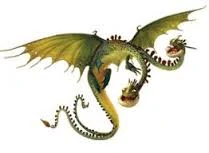

Groncle
Introduccion
Clase: Misterio
Habilidad/es: Una cabeza exhala un gas y la otra chispas, con las que enciende el gas de la otra cabeza
Hábitat: Cuevas
¿Se puede entrenar? Sí
Ataque: 12
Velocidad: 10
Armadura: 10
Poder de fuego: 14
Límite de disparos: 6
Veneno: 4
Mandíbula: 6 (3 por cabeza)
Sigilo: 22 (11 por cabeza)
